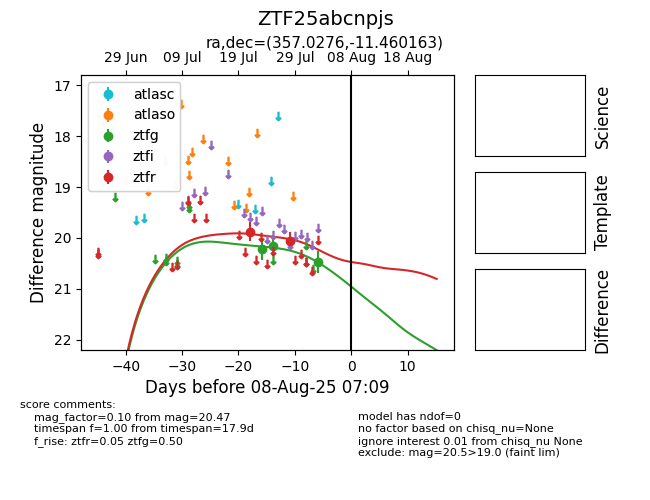

Target ZTF25abcnpjs at 2025-08-08 09:40, see:
FINK: fink-portal.org/ZTF25abcnpjs
Lasair: lasair-ztf.lsst.ac.uk/objects/ZTF25abcnpjs
ALeRCE: alerce.online/object/ZTF25abcnpjs
alt names
ZTF25abcnpjs (ztf,fink)
coordinates:
equatorial (ra, dec) = (357.0276,-11.46016)
galactic (l, b) = (76.3620,-68.39661)
photometry
last ztfg=20.47, ztfr=20.06
3 ztfg, 2 ztfr detections
